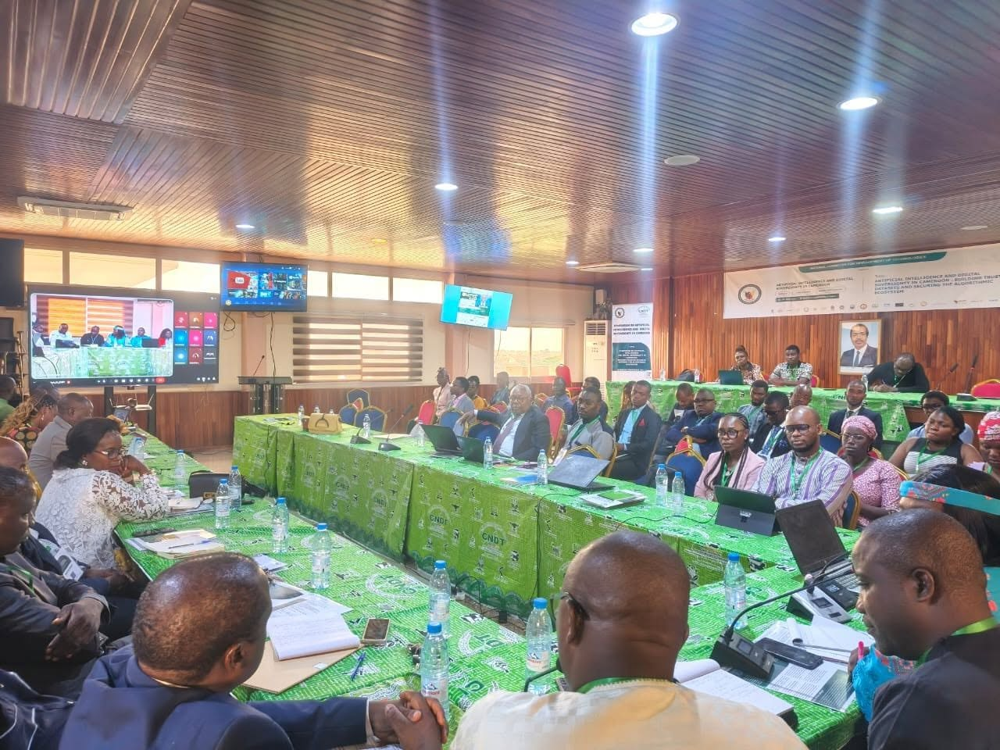
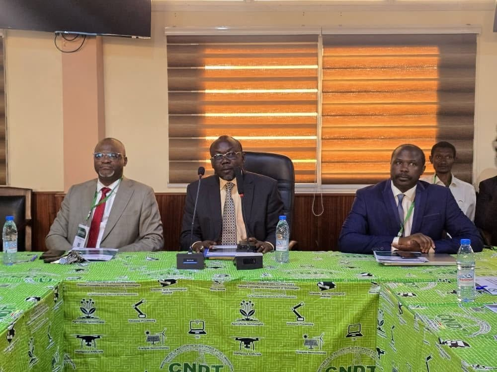
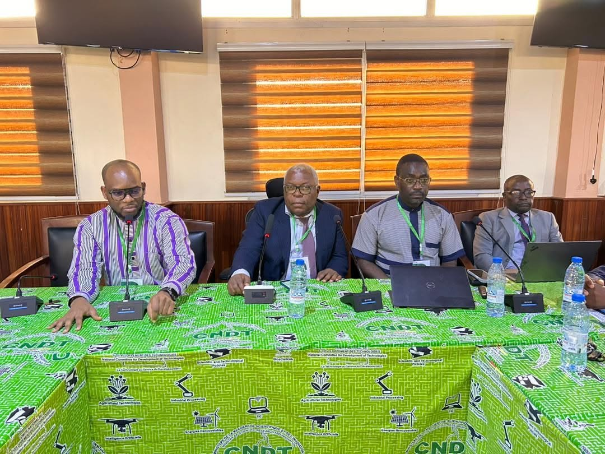
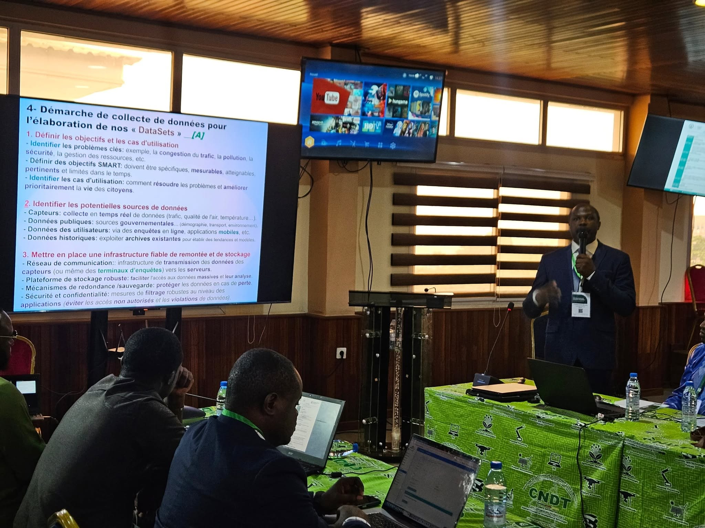

Présentation
Thème : « Bâtir les datasets de confiance et sécuriser l'écosystème algorithmique »
Le lundi 25 mai 2026, le Comité National de Développement des Technologies (CNDT) a organisé, dans la salle de conférences du MINRESI, une journée dédiée à un enjeu stratégique majeur pour le Cameroun.
Ouverture officielle
La cérémonie a été présidée par le Dr Jean Marcel, Inspecteur Général du MINRESI, représentant Madame la Ministre de la Recherche Scientifique et de l’Innovation empêchée. Elle s'est ouverte sur le mot de bienvenue du Secrétaire Permanent du CNDT, Dr Ele Abiama Patrice, qui a rappelé l'importance des données dans la gouvernance de l'IA.
Le discours inaugural, prononcé par le Pr Nkenlifack Marcellin sur le thème « L'IA comme levier de souveraineté numérique au Cameroun », a mis en lumière les défis complexes liés à la gestion des données locales.
Dans son allocution, le Dr Jean Marcel a exprimé le vœu que ces travaux contribuent à une IA camerounaise fiable, utile et souveraine.
Trois temps forts de la journée
Experts et membres de la Commission TIC-IA du CNDT, partenaires techniques, chercheurs, universitaires et invités spéciaux se sont réunis autour :
- d'une conférence-débat sur l'importance de « Construire des datasets de confiance pour l'IA au Cameroun » ;
- d'un panel sur comment « Sécuriser l'écosystème algorithmique : enjeux et solutions » ;
- de deux ateliers pratiques sur la collecte, l'annotation et la création de datasets locaux.
La journée s'est achevée par la restitution des travaux et une cérémonie de clôture conviviale.
Galerie




Rapports & documents
Retrouvez ci-dessous les documents officiels produits dans le cadre du projet.
-
RapportTélécharger
Définition des périmètres, indicateurs et sources du projet.